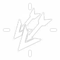
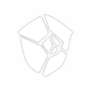
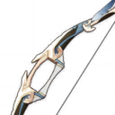

Biografia:
Um Bardo de origem desconhecida, às vezes, canta poemas antigos e outras vezes canta canções novas que ninguém nunca ouviu
falar. Adora maçãs e um atmosfera animada, detesta queijos e coisas pegajosas.
Seus poderers Anemo geralmente se manifestam na forma de penas, porque ele gosta de objetos muito leves e voadores.
Skills:
Divine Marksmanship
Ataque Normal
Ataque Normal:
Executa até 6 tiros consecutivos com um arco.
Ataque Carregado:
Execute um tiro certeiro mais preciso com Dano aumentado.
Enquanto mira, ventos favoráveis se acumulam na ponta da flecha.
Uma flecha totalmente carregada irá lidar com Dano Anemo.
Ataque Imersivo:
Dispara uma chuva de flechas no ar antes de cair e atingir o solo, distribuindo Dano de AdE no impacto.
| Dano de 1º Golpe |
20.4% + 20.4% |
| Dano de 2º Golpe |
44.4% |
| Dano de 3º Golpe |
52.4% |
| Dano de 4º Golpe |
26.1% + 26.1% |
| Dano de 5º Golpe |
50.7% |
| Dano de 6º Golpe |
71% |
| Disparo com Mira |
43.9% |
| Disparo com Mira com Energização Completa |
124% |
| Dano Durante a Queda |
56.8% |
| Dano de Queda de Alta/Baixa Altitude |
114% / 142% |
Skyward Sonnet
Habilidade Elemental
Ó vento sobre o qual todos os hinos e canções voam, leve esses caminhantes da Terra para o céu!
Aperte
Invoca um Domínio do Vento no local do inimigo, distribuindo Dano Anemo AdE e lançando os inimigos para o ar.
Pressione
Invoca um Domínio do Vento ainda maior com Venti como epicentro, lidando com Dano Anemo AdE e lançando inimigos afetados no ar.
Depois de liberar a versão Hold dessa habilidade, Venti monta o vento no ar.
Os inimigos atingidos pelo Skyward Sonnetcairão no chão lentamente.
| Dano Apertado |
276% |
| Tempo de Recarga (apertado) |
6s |
| Dando Pressionado |
380% |
| Tempo de Recarga (pressionado) |
15s |
Wind's Grand Ode
Explosāo Elemental
Dispara uma flecha feita de incontáveis ventos unidos, criando um enorme Stormeye que
suga objetos e inimigos ao longo de seu caminho, lidando continuamente com Dano Anemo.
Absorção Elemental
Se o Stormeye entrar em contato com os elementos Hydro / Pyro / Cryo / Electro, ele gerará DMG elementar adicional desse tipo.
A absorção elementar pode ocorrer apenas uma vez por uso.
| Dano ao Longo do Tempo |
47% |
| Dano Elemental Adicional |
23.5% |
| Duração |
8s |
| Custo de Energia |
60 |
Talentos Passivos:
Embrace of Winds
Desbloqueado na Ascensão 1
Segurar Skyward Sonnetcria uma corrente ascendente que dura 20s.
Stormeye
Desbloqueado na Ascensão 4
Regenera 15 de energia para Venti após os efeitos da Wind's Grand Ode.
Se ocorrer uma absorção elementar, isso também restaura 15 de energia para todos os personagens daquele elemento correspondente.
Windrider
Desbloqueado Automaticamente
Diminui o consumo de energia de todos os membros do grupo em 20%.
Constelações:

Splitting Gale
Constelaçāo Nível 1
Dispara 2 flechas adicionais por tiro certeiro, cada uma dando 33% do Dano da flecha original.
Breeze of Reminiscence
Constelaçāo Nível 2
Skyward Sonnet diminui a RES Anemo do inimigo em 12% por 10s.
Os inimigos lançados pelo Skyward Sonnet sofrem uma redução
adicional de 12% no RES do Anemo e no RES física durante o vôo.
Ode to Thousand Winds
Constelaçāo Nível 3
Aumenta o Nível da Wind's Grand Ode em 3.
O nível máximo de atualização é 15.
Hurricane of Freedom
Constelaçāo Nível 4
Quando Venti pega um Orbe ou Partícula Elemental, ele recebe um Bônus Dano Anemo de 25% por 10s.
Concierto dal Cielo
Constelaçāo Nível 5
Aumente o nível do Skyward Sonnet em 3.
O nível máximo de atualização é 15.

Storm of Defiance
Constelaçāo Nível 6
Os alvos que pegam DMG do Wind's Grand Ode têm seu RES do Anemo reduzido em 20%.
Se ocorrer uma absorção elementar, então seu RES em direção ao elemento correspondente também é reduzido em 20%.
Melhores Builds:
Suporte Build de Anemo
Esta construção aumenta os danos do Anemo e do Redemoinho de Venti, ao mesmo tempo que reduz a RES Elemental dos inimigos para o resto do seu grupo.
Arma:

The Stringless
Aumenta a habilidade elemental e o Dano de explosão elemental em 24/30/36/42/48%.
Conjuntos de Artefatos:
Viridescent Venerer
(2) Dano Bonús de Anemo +15%
(4) Aumenta o Dano do Redemoinho em 60%. Diminui a RES Elemental do oponente para o elemento infundido no Redemoinho em 40% por 10s.
Build de Disparo com Mira
A ideia por trás dessa construção é disparar um tiro poderoso e totalmente carregado com Venti a cada 10 segundos, aproveitando as 2 flechas extras de sua primeira constelação, Splitting Gale.
Arma:

Royal Bow
Ao causar dano a um oponente, aumenta a taxa de CRIT em 8%. Máximo de 5 pilhas. Um acerto de CRIT remove todas as pilhas.

Sharpshooter's Oath
Aumenta o DMG contra os pontos fracos em 24/30/36/42/48%.
Conjuntos de Artefatos:
Wanderer's Troupe
(2) Maestria Elemental +80
(4) Aumenta o Dano de Ataque Carregado em 35% se o personagem usar um Catalyst ou Bow.